1-TO-1 old [0] → new [0]
0→0 of old 1.00000000000000000 of new 1.00000000000000000
one old facet, one new facet
hash: DIFFERENT (47fe10ef0ca3 → d31d929ae5d3) 129,532 of 3,217,500 pixels differ (4.03%), max channel delta 255, mean |delta| 1.83
Overlap is 1.0000 in both directions: these two facets own exactly the same points. The pixel difference above is annotation, layout or labelling, not geometry. Nothing moved.
| old | new | shared pts |
fraction of old | fraction of new |
|---|
| old 0 | new 0 | 1,538,098 | 1.0000 | 1.0000 |
OLD facet 0main | pitch 21.19° | 1,538,098 pts | q 1.3054
cropped ×1.8 — the render drew into 54.5% of its frame. Click for the untouched original.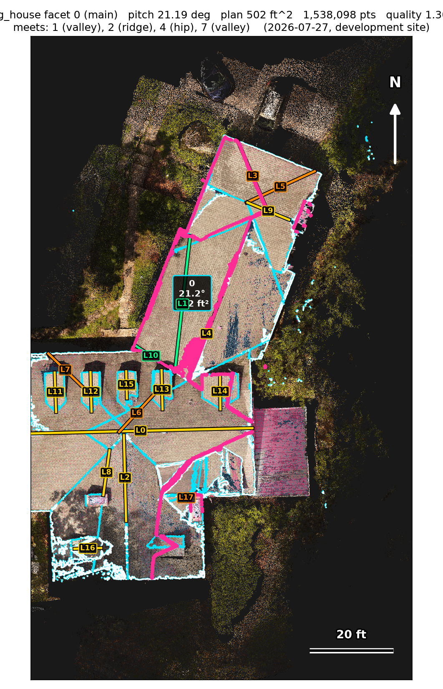
NEW facet 0main | pitch 21.19° | 1,538,098 pts | q 1.3054
cropped ×1.8 — the render drew into 54.5% of its frame. Click for the untouched original.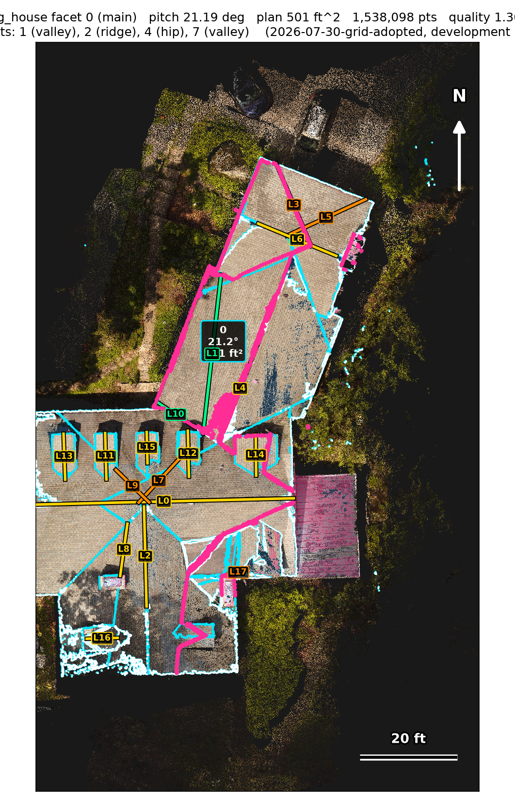
Physical description only. No threshold, no parameter, no fix.
1-TO-1 old [1] → new [1]
1→1 of old 1.00000000000000000 of new 1.00000000000000000
one old facet, one new facet
hash: DIFFERENT (99bf7a5a553f → 2e98e1fb71c5) 279,270 of 3,217,500 pixels differ (8.68%), max channel delta 255, mean |delta| 3.49
Overlap is 1.0000 in both directions: these two facets own exactly the same points. The pixel difference above is annotation, layout or labelling, not geometry. Nothing moved.
| old | new | shared pts |
fraction of old | fraction of new |
|---|
| old 1 | new 1 | 1,154,335 | 1.0000 | 1.0000 |
OLD facet 1main | pitch 33.07° | 1,154,335 pts | q 2.2951
cropped ×1.3 — the render drew into 76.1% of its frame. Click for the untouched original.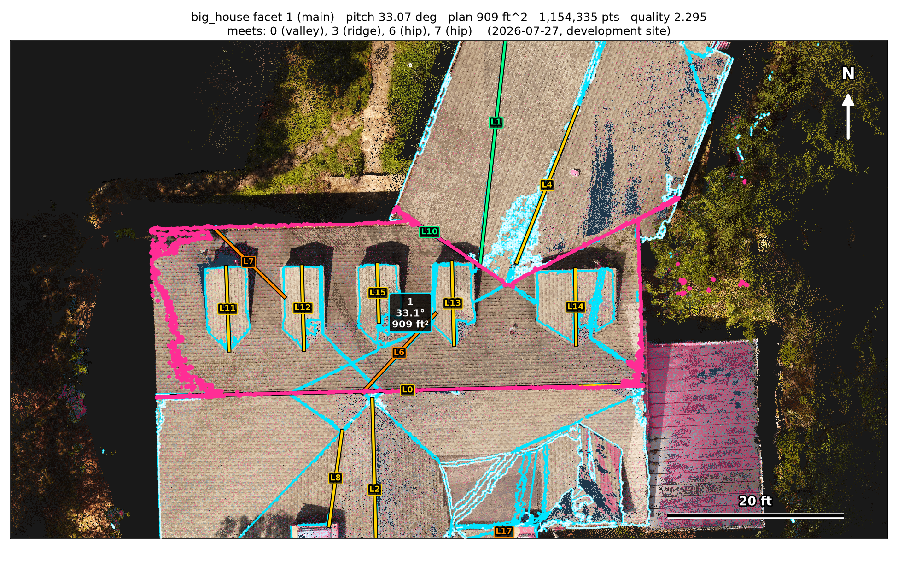
NEW facet 1main | pitch 33.07° | 1,154,335 pts | q 2.2951
cropped ×1.3 — the render drew into 76.1% of its frame. Click for the untouched original.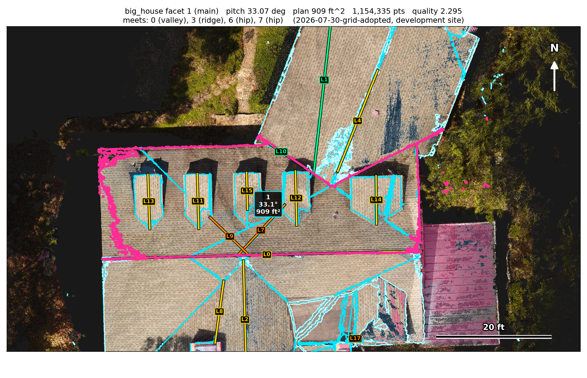
Physical description only. No threshold, no parameter, no fix.
1-TO-1 old [2] → new [2]
2→2 of old 1.00000000000000000 of new 1.00000000000000000
one old facet, one new facet
hash: DIFFERENT (d2036219bc76 → 8ef333549d03) 130,149 of 3,217,500 pixels differ (4.05%), max channel delta 255, mean |delta| 1.76
Overlap is 1.0000 in both directions: these two facets own exactly the same points. The pixel difference above is annotation, layout or labelling, not geometry. Nothing moved.
| old | new | shared pts |
fraction of old | fraction of new |
|---|
| old 2 | new 2 | 693,991 | 1.0000 | 1.0000 |
OLD facet 2main | pitch 22.72° | 693,991 pts | q 1.0069
cropped ×1.4 — the render drew into 70.9% of its frame. Click for the untouched original.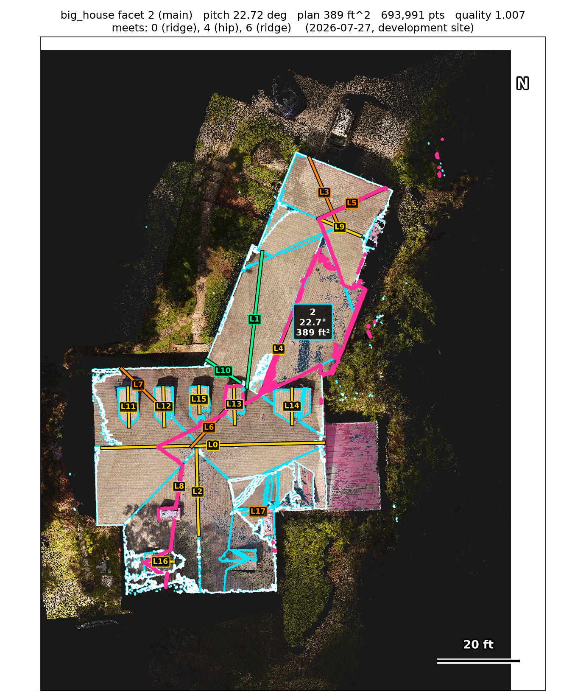
NEW facet 2main | pitch 22.72° | 693,991 pts | q 1.0069
cropped ×1.4 — the render drew into 70.9% of its frame. Click for the untouched original.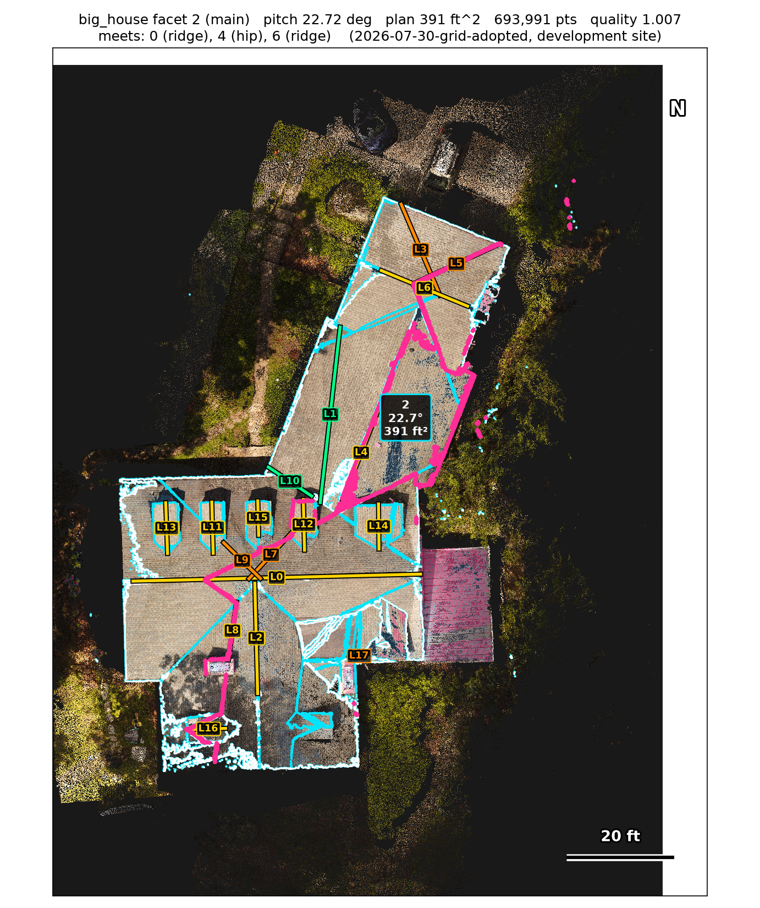
Physical description only. No threshold, no parameter, no fix.
1-TO-1 old [3] → new [3]
3→3 of old 1.00000000000000000 of new 1.00000000000000000
one old facet, one new facet
hash: DIFFERENT (d45d8153e2b7 → a0090d78f064) 255,160 of 3,217,500 pixels differ (7.93%), max channel delta 255, mean |delta| 2.93
Overlap is 1.0000 in both directions: these two facets own exactly the same points. The pixel difference above is annotation, layout or labelling, not geometry. Nothing moved.
| old | new | shared pts |
fraction of old | fraction of new |
|---|
| old 3 | new 3 | 850,268 | 1.0000 | 1.0000 |
OLD facet 3main | pitch 34.01° | 850,268 pts | q 1.8003
cropped ×1.4 — the render drew into 69.2% of its frame. Click for the untouched original.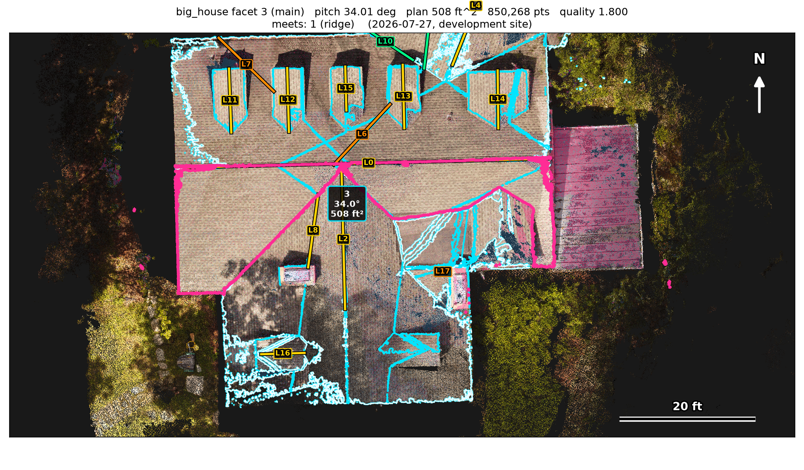
NEW facet 3main | pitch 34.01° | 850,268 pts | q 1.8003
cropped ×1.4 — the render drew into 69.2% of its frame. Click for the untouched original.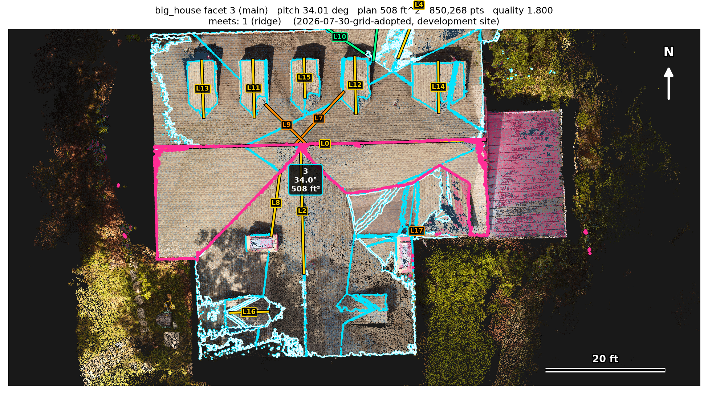
Physical description only. No threshold, no parameter, no fix.
1-TO-1 old [4] → new [4]
4→4 of old 1.00000000000000000 of new 1.00000000000000000
one old facet, one new facet
hash: DIFFERENT (4cf598a2b086 → 6623baf6e668) 27,974 of 3,217,500 pixels differ (0.87%), max channel delta 255, mean |delta| 0.72
Overlap is 1.0000 in both directions: these two facets own exactly the same points. The pixel difference above is annotation, layout or labelling, not geometry. Nothing moved.
| old | new | shared pts |
fraction of old | fraction of new |
|---|
| old 4 | new 4 | 744,303 | 1.0000 | 1.0000 |
OLD facet 4main | pitch 20.99° | 744,303 pts | q 2.9480
cropped ×46.7 — the render drew into 2.1% of its frame · only 214×240 real pixels of panel were drawn, so it enlarges soft. Click for the untouched original.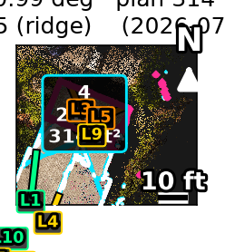
NEW facet 4main | pitch 20.99° | 744,303 pts | q 2.9480
cropped ×46.9 — the render drew into 2.1% of its frame · only 213×240 real pixels of panel were drawn, so it enlarges soft. Click for the untouched original.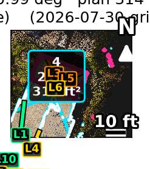
Physical description only. No threshold, no parameter, no fix.
1-TO-1 old [5] → new [5]
5→5 of old 1.00000000000000000 of new 1.00000000000000000
one old facet, one new facet
hash: DIFFERENT (14c6952acbcd → c3474ba40d74) 102,357 of 3,217,500 pixels differ (3.18%), max channel delta 255, mean |delta| 1.29
Overlap is 1.0000 in both directions: these two facets own exactly the same points. The pixel difference above is annotation, layout or labelling, not geometry. Nothing moved.
| old | new | shared pts |
fraction of old | fraction of new |
|---|
| old 5 | new 5 | 669,484 | 1.0000 | 1.0000 |
OLD facet 5main | pitch 21.36° | 669,484 pts | q 2.6648
cropped ×1.8 — the render drew into 54.1% of its frame. Click for the untouched original.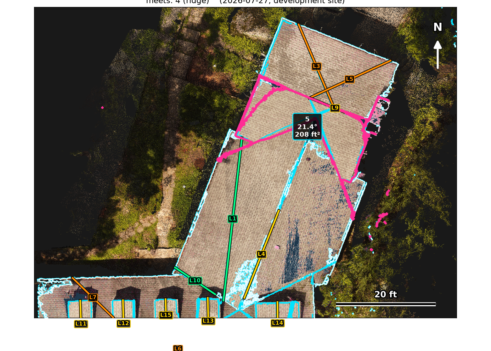
NEW facet 5main | pitch 21.36° | 669,484 pts | q 2.6648
cropped ×1.8 — the render drew into 54.1% of its frame. Click for the untouched original.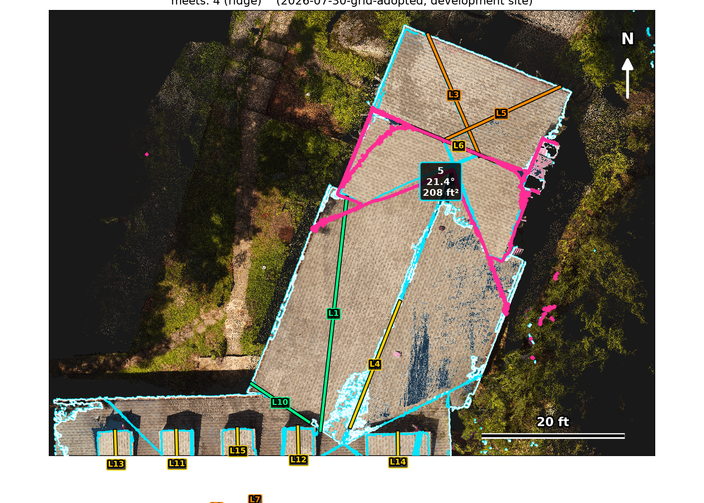
Physical description only. No threshold, no parameter, no fix.
1-TO-1 old [6] → new [6]
6→6 of old 1.00000000000000000 of new 1.00000000000000000
one old facet, one new facet
hash: DIFFERENT (1b5daa727c88 → 146cb59a544c) 127,457 of 3,217,500 pixels differ (3.96%), max channel delta 255, mean |delta| 1.72
Overlap is 1.0000 in both directions: these two facets own exactly the same points. The pixel difference above is annotation, layout or labelling, not geometry. Nothing moved.
| old | new | shared pts |
fraction of old | fraction of new |
|---|
| old 6 | new 6 | 403,109 | 1.0000 | 1.0000 |
OLD facet 6main | pitch 33.76° | 403,109 pts | q 1.8218
cropped ×3.3 — the render drew into 30.2% of its frame · only 670×1137 real pixels of panel were drawn, so it enlarges soft. Click for the untouched original.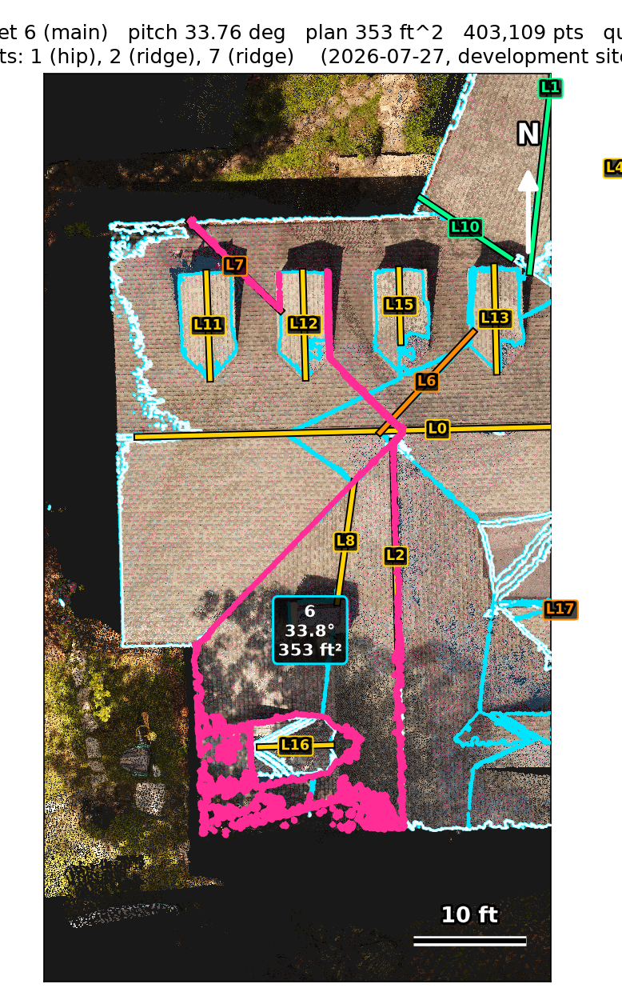
NEW facet 6main | pitch 33.76° | 403,109 pts | q 1.8218
cropped ×3.4 — the render drew into 29.3% of its frame · only 651×1137 real pixels of panel were drawn, so it enlarges soft. Click for the untouched original.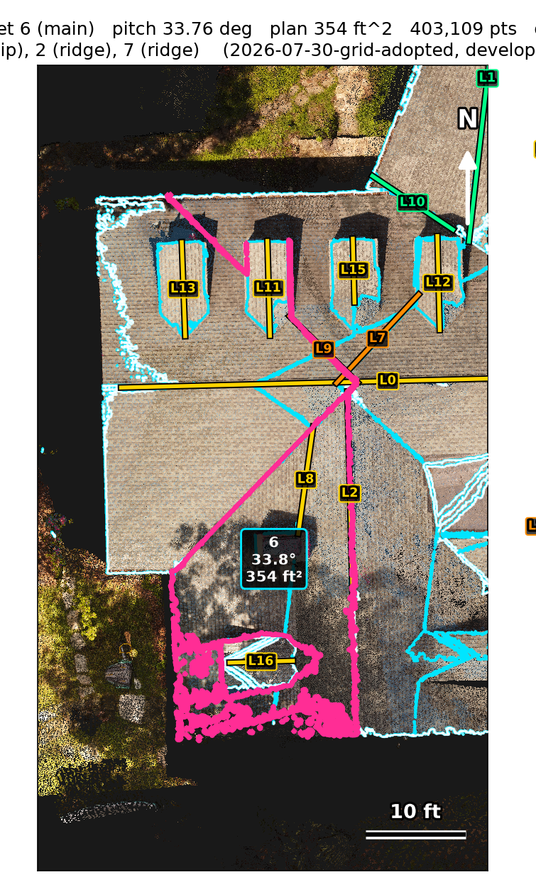
Physical description only. No threshold, no parameter, no fix.
1-TO-1 old [7] → new [7]
7→7 of old 1.00000000000000000 of new 1.00000000000000000
one old facet, one new facet
hash: DIFFERENT (ab84ab35f919 → 911af0984a05) 146,928 of 3,217,500 pixels differ (4.57%), max channel delta 255, mean |delta| 1.88
Overlap is 1.0000 in both directions: these two facets own exactly the same points. The pixel difference above is annotation, layout or labelling, not geometry. Nothing moved.
| old | new | shared pts |
fraction of old | fraction of new |
|---|
| old 7 | new 7 | 297,583 | 1.0000 | 1.0000 |
OLD facet 7main | pitch 33.52° | 297,583 pts | q 2.0741
cropped ×2.3 — the render drew into 43.2% of its frame. Click for the untouched original.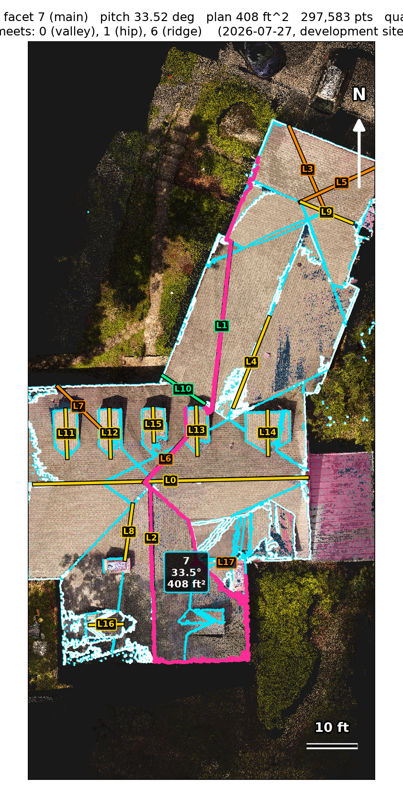
NEW facet 7main | pitch 33.52° | 297,583 pts | q 2.0741
cropped ×2.3 — the render drew into 43.2% of its frame. Click for the untouched original.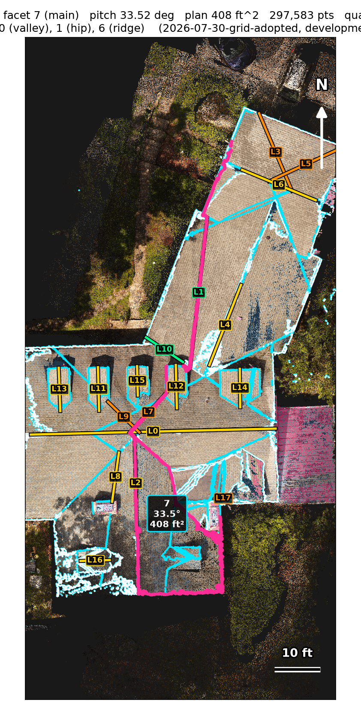
Physical description only. No threshold, no parameter, no fix.
1-TO-1 old [8] → new [8]
8→8 of old 0.85790291491286730 of new 0.89971018677997916 NOT 1.0
one old facet, one new facet
hash: DIFFERENT (38d8fc6f6964 → b33ab62f1f43) 841,252 of 3,217,500 pixels differ (26.15%), max channel delta 255, mean |delta| 9.04
| old | new | shared pts |
fraction of old | fraction of new |
|---|
| old 8 | new 8 | 87,235 | 0.8579 | 0.8997 |
| old 8 | new 9 | 10,929 | 0.1075 | 0.1251 |
| old 8 | new 10 | 1,029 | 0.0101 | 0.0356 |
Rows below the line are overlaps with facets OUTSIDE this row. They are printed, never grouped; grouping is mutual best match and uses no cutoff.
OLD facet 8recovered | pitch 9.79° | 101,684 pts | q 2.5989
cropped ×1.5 — the render drew into 66.1% of its frame. Click for the untouched original.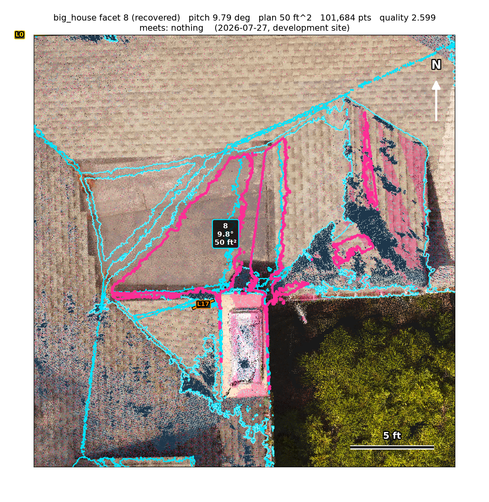
NEW facet 8recovered | pitch 10.01° | 96,959 pts | q 2.7682
cropped ×1.5 — the render drew into 66.1% of its frame. Click for the untouched original.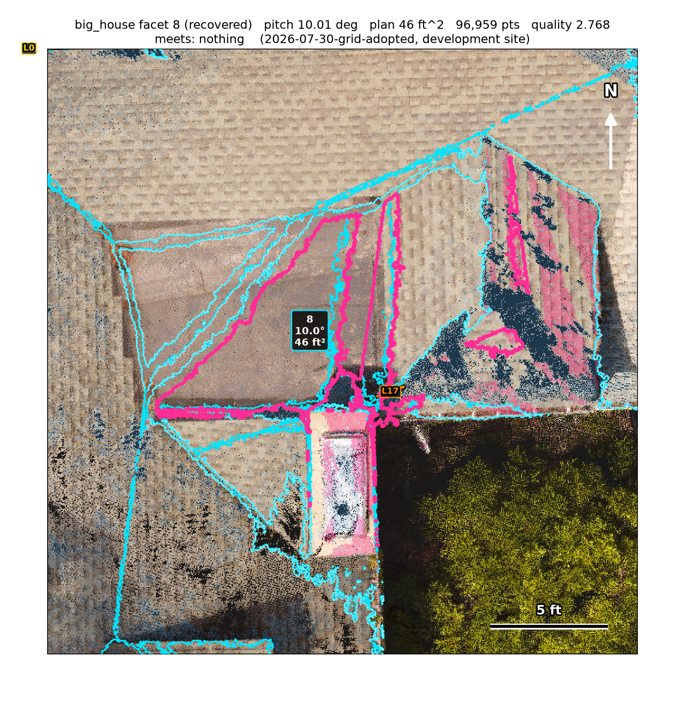
Physical description only. No threshold, no parameter, no fix.
1-TO-1 old [9] → new [9]
9→9 of old 0.89337635411171501 of new 0.83334286989460193 NOT 1.0
one old facet, one new facet
hash: DIFFERENT (c86bfdd0e06a → 86a11515705d) 1,304,386 of 3,217,500 pixels differ (40.54%), max channel delta 255, mean |delta| 17.29
| old | new | shared pts |
fraction of old | fraction of new |
|---|
| old 9 | new 9 | 72,820 | 0.8934 | 0.8333 |
| old 9 | new 8 | 5,707 | 0.0700 | 0.0589 |
| old 9 | new 10 | 893 | 0.0110 | 0.0309 |
Rows below the line are overlaps with facets OUTSIDE this row. They are printed, never grouped; grouping is mutual best match and uses no cutoff.
OLD facet 9recovered | pitch 23.20° | 81,511 pts | q 0.9523
cropped ×1.7 — the render drew into 58.3% of its frame. Click for the untouched original.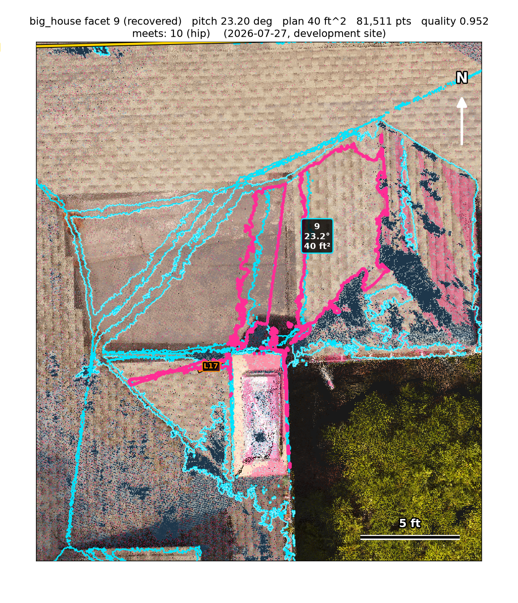
NEW facet 9recovered | pitch 23.42° | 87,383 pts | q 0.8655
cropped ×1.7 — the render drew into 58.2% of its frame. Click for the untouched original.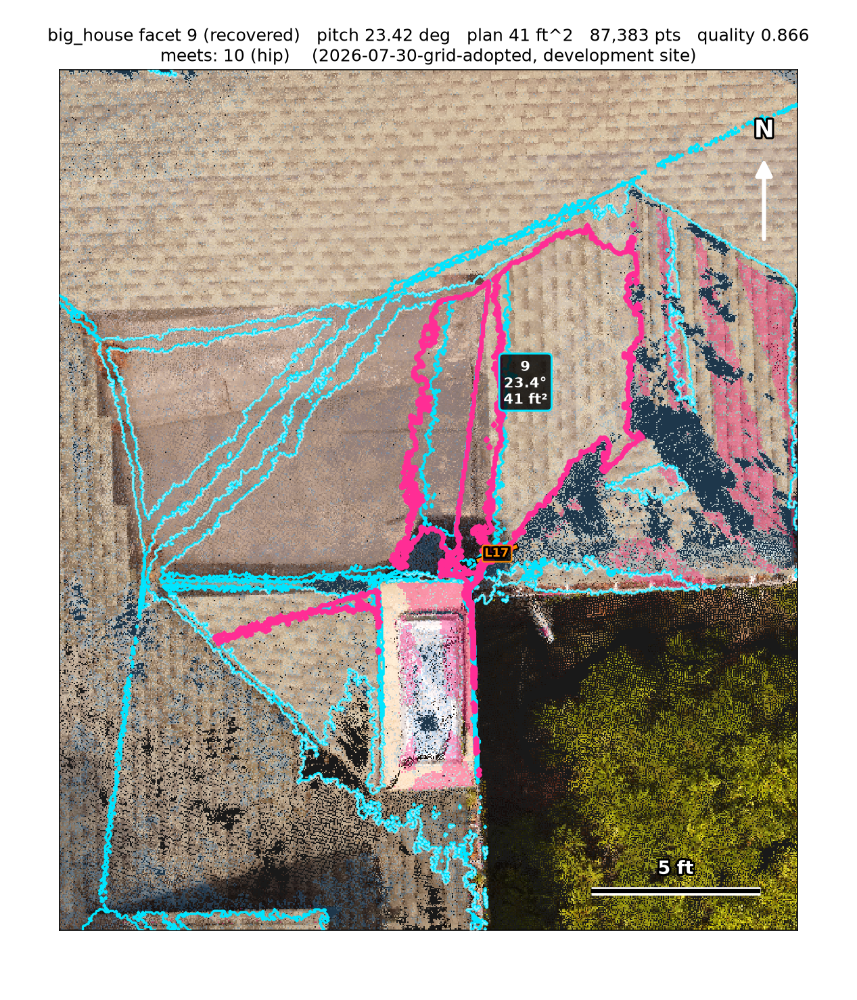
Physical description only. No threshold, no parameter, no fix.
1-TO-1 old [10] → new [10]
10→10 of old 0.76034294053265228 of new 0.72012024463563806 NOT 1.0
one old facet, one new facet
hash: DIFFERENT (8e4462d30416 → e9ee23b2bcee) 1,409,082 of 3,217,500 pixels differ (43.79%), max channel delta 255, mean |delta| 25.86
| old | new | shared pts |
fraction of old | fraction of new |
|---|
| old 10 | new 10 | 20,841 | 0.7603 | 0.7201 |
| old 10 | new 8 | 885 | 0.0323 | 0.0091 |
| old 10 | new 9 | 819 | 0.0299 | 0.0094 |
Rows below the line are overlaps with facets OUTSIDE this row. They are printed, never grouped; grouping is mutual best match and uses no cutoff.
OLD facet 10recovered | pitch 38.91° | 27,410 pts | q 1.5869
cropped ×1.6 — the render drew into 62.7% of its frame. Click for the untouched original.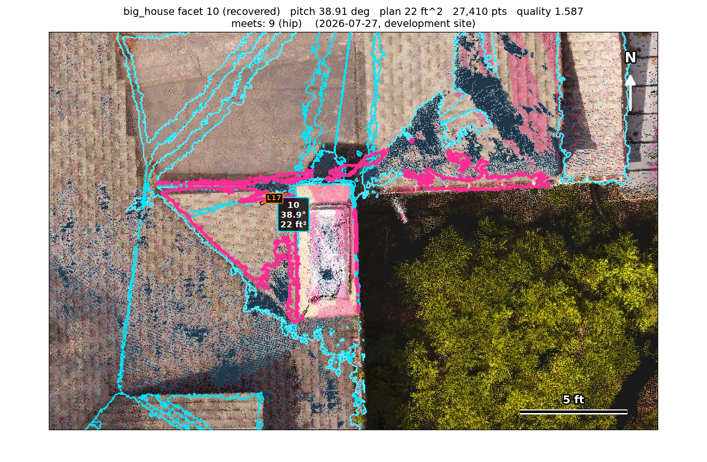
NEW facet 10recovered | pitch 39.60° | 28,941 pts | q 1.1163
cropped ×1.6 — the render drew into 61.9% of its frame. Click for the untouched original.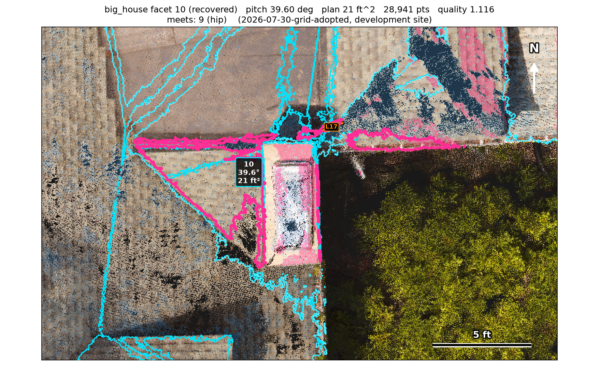
Physical description only. No threshold, no parameter, no fix.
1-TO-1 old [11] → new [11]
11→11 of old 0.98780675436572041 of new 0.97713263830758690 NOT 1.0
one old facet, one new facet
hash: DIFFERENT (7b6de6430b63 → dcfca80c3b8f) 1,173,530 of 3,217,500 pixels differ (36.47%), max channel delta 255, mean |delta| 12.00
| old | new | shared pts |
fraction of old | fraction of new |
|---|
| old 11 | new 11 | 77,043 | 0.9878 | 0.9771 |
OLD facet 11recovered | pitch 22.15° | 77,994 pts | q 1.2258
cropped ×2.0 — the render drew into 50.4% of its frame. Click for the untouched original.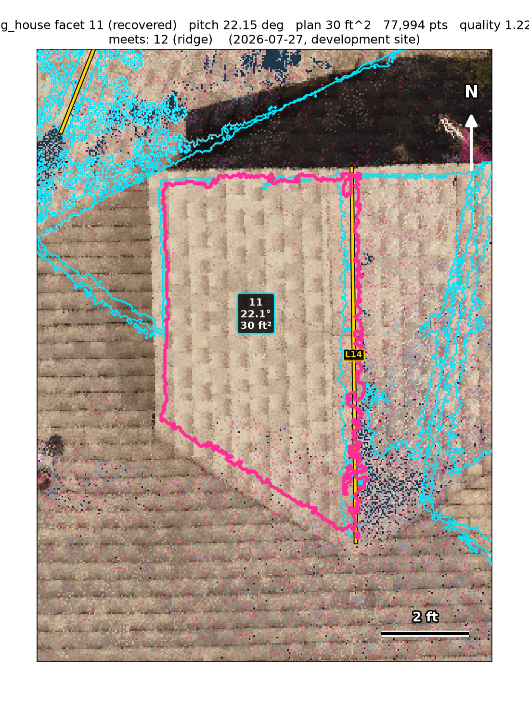
NEW facet 11recovered | pitch 22.15° | 78,846 pts | q 1.2253
cropped ×2.0 — the render drew into 51.0% of its frame. Click for the untouched original.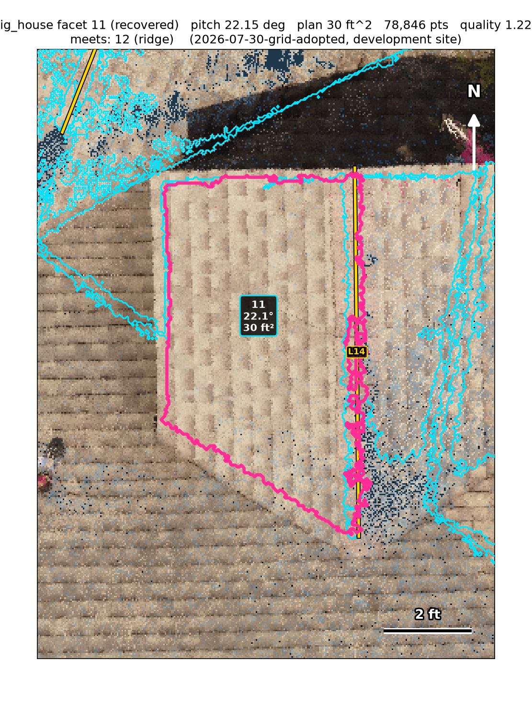
Physical description only. No threshold, no parameter, no fix.
1-TO-1 old [12] → new [12]
12→12 of old 0.96332763990756554 of new 0.90713846444959556 NOT 1.0
one old facet, one new facet
hash: DIFFERENT (c6fc6f89e579 → 6f3ef8280608) 958,763 of 3,217,500 pixels differ (29.80%), max channel delta 255, mean |delta| 8.26
| old | new | shared pts |
fraction of old | fraction of new |
|---|
| old 12 | new 12 | 19,176 | 0.9633 | 0.9071 |
OLD facet 12recovered | pitch 22.67° | 19,906 pts | q 0.8087
cropped ×2.4 — the render drew into 42.5% of its frame. Click for the untouched original.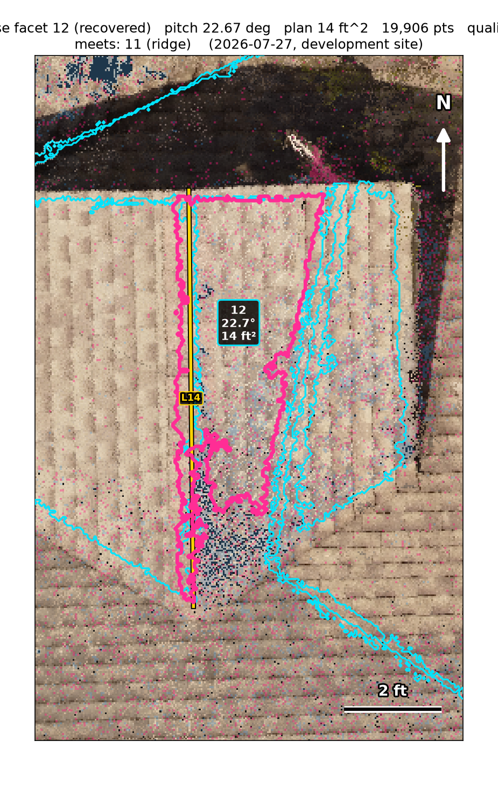
NEW facet 12recovered | pitch 22.69° | 21,139 pts | q 0.8061
cropped ×2.4 — the render drew into 42.4% of its frame. Click for the untouched original.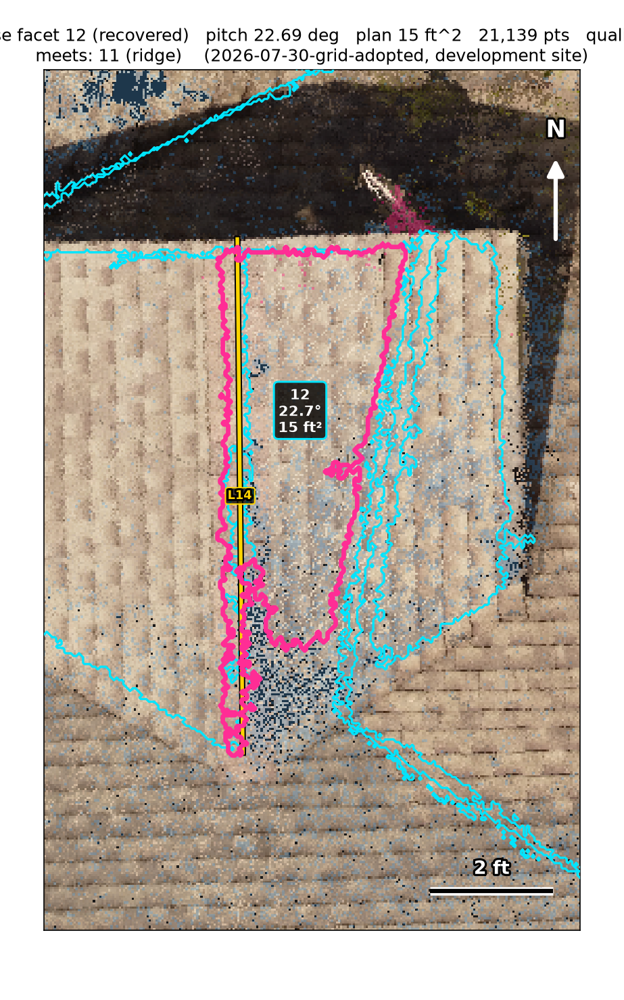
Physical description only. No threshold, no parameter, no fix.
1-TO-1 old [13] → new [13]
13→13 of old 0.97741912310528967 of new 0.95340200406418607 NOT 1.0
one old facet, one new facet
hash: DIFFERENT (051f463603ed → 0287f80cfdc0) 810,990 of 3,217,500 pixels differ (25.21%), max channel delta 255, mean |delta| 6.90
| old | new | shared pts |
fraction of old | fraction of new |
|---|
| old 13 | new 13 | 40,818 | 0.9774 | 0.9534 |
OLD facet 13recovered | pitch 35.14° | 41,761 pts | q 0.8511
cropped ×2.5 — the render drew into 39.2% of its frame. Click for the untouched original.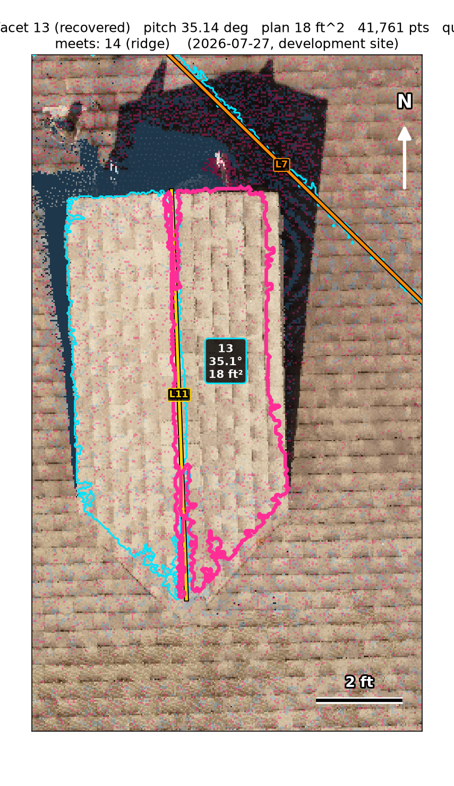
NEW facet 13recovered | pitch 35.16° | 42,813 pts | q 0.8580
cropped ×2.6 — the render drew into 39.0% of its frame. Click for the untouched original.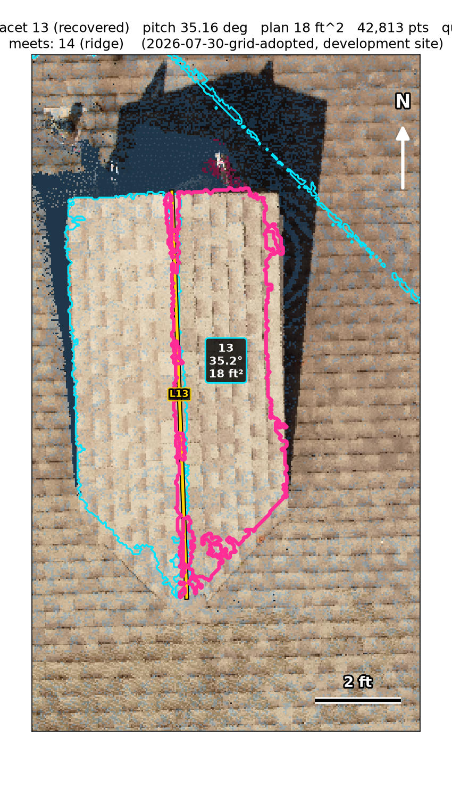
Physical description only. No threshold, no parameter, no fix.
1-TO-1 old [14] → new [14]
14→14 of old 0.96047252615125644 of new 0.93356122359540716 NOT 1.0
one old facet, one new facet
hash: DIFFERENT (c05414ef4e7f → 1ec26ce10367) 713,059 of 3,217,500 pixels differ (22.16%), max channel delta 255, mean |delta| 5.57
| old | new | shared pts |
fraction of old | fraction of new |
|---|
| old 14 | new 14 | 31,953 | 0.9605 | 0.9336 |
OLD facet 14recovered | pitch 34.67° | 33,268 pts | q 0.9849
cropped ×2.5 — the render drew into 39.8% of its frame. Click for the untouched original.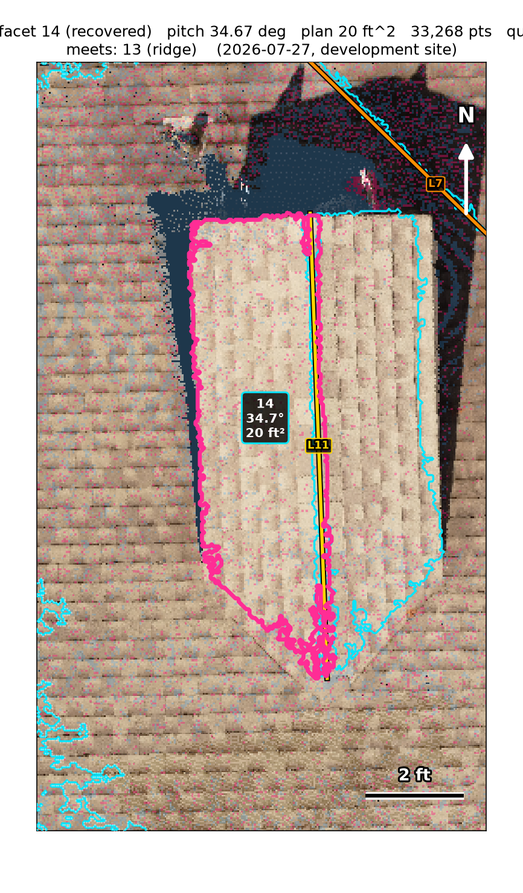
NEW facet 14recovered | pitch 34.68° | 34,227 pts | q 0.9842
cropped ×2.5 — the render drew into 39.7% of its frame. Click for the untouched original.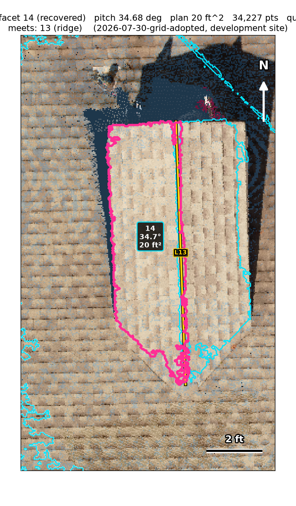
Physical description only. No threshold, no parameter, no fix.
1-TO-1 old [15] → new [15]
15→15 of old 0.98956516273003003 of new 0.98381376454964453 NOT 1.0
one old facet, one new facet
hash: DIFFERENT (e00f87d0e38d → de9dcac88893) 380,542 of 3,217,500 pixels differ (11.83%), max channel delta 255, mean |delta| 3.82
| old | new | shared pts |
fraction of old | fraction of new |
|---|
| old 15 | new 15 | 62,969 | 0.9896 | 0.9838 |
OLD facet 15recovered | pitch 35.16° | 63,633 pts | q 0.6488
cropped ×2.6 — the render drew into 38.9% of its frame. Click for the untouched original.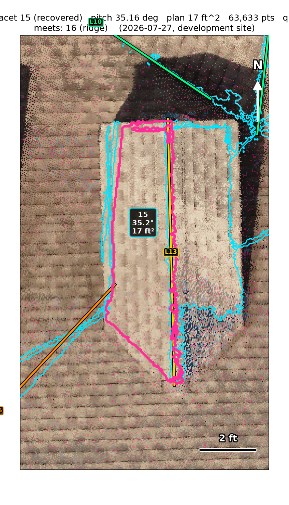
NEW facet 15recovered | pitch 35.15° | 64,005 pts | q 0.6511
cropped ×2.6 — the render drew into 38.8% of its frame. Click for the untouched original.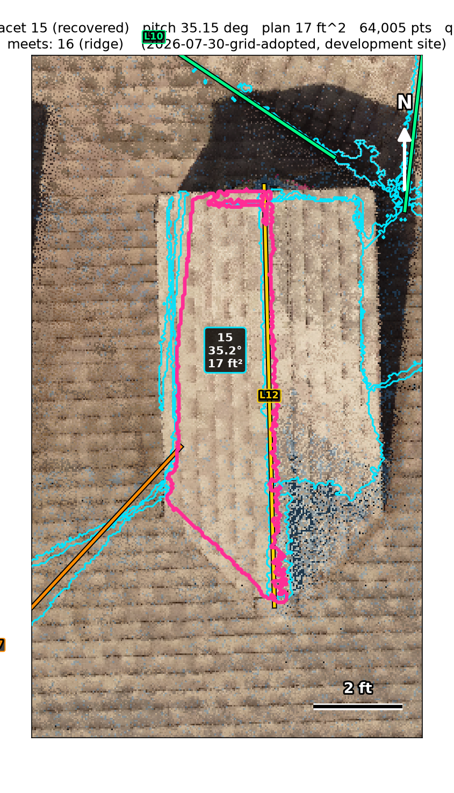
Physical description only. No threshold, no parameter, no fix.
1-TO-1 old [16] → new [16]
16→16 of old 0.98130406885412746 of new 0.97265290905502311 NOT 1.0
one old facet, one new facet
hash: DIFFERENT (198bcf1770c8 → 2c63d3acde92) 811,279 of 3,217,500 pixels differ (25.21%), max channel delta 255, mean |delta| 6.79
| old | new | shared pts |
fraction of old | fraction of new |
|---|
| old 16 | new 16 | 44,352 | 0.9813 | 0.9727 |
OLD facet 16recovered | pitch 34.11° | 45,197 pts | q 0.8896
cropped ×2.5 — the render drew into 39.2% of its frame. Click for the untouched original.NEW facet 16recovered | pitch 34.12° | 45,599 pts | q 0.8909
cropped ×2.5 — the render drew into 39.4% of its frame. Click for the untouched original.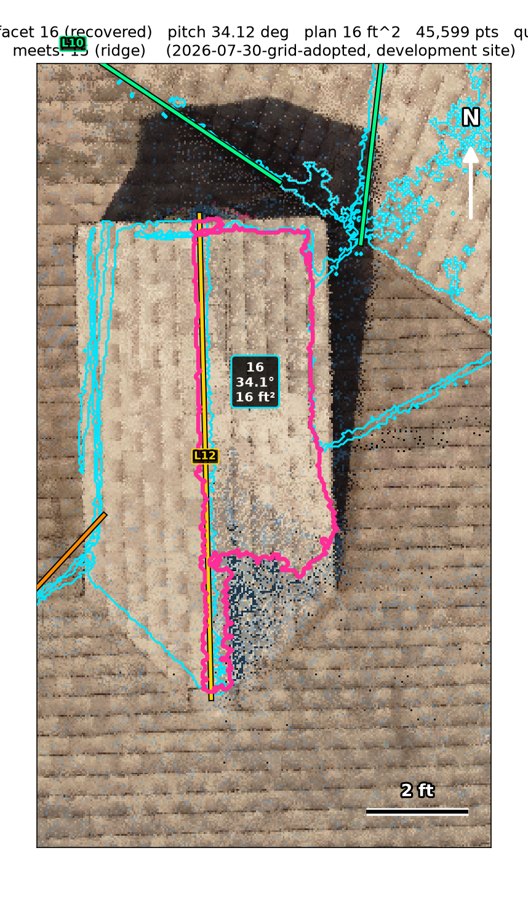
Physical description only. No threshold, no parameter, no fix.
1-TO-1 old [17] → new [17]
17→17 of old 0.99104102866490407 of new 0.97651579046012560 NOT 1.0
one old facet, one new facet
hash: DIFFERENT (96175b625559 → 8fb9f17dab7e) 498,234 of 3,217,500 pixels differ (15.49%), max channel delta 255, mean |delta| 4.28
| old | new | shared pts |
fraction of old | fraction of new |
|---|
| old 17 | new 17 | 52,102 | 0.9910 | 0.9765 |
OLD facet 17recovered | pitch 35.17° | 52,573 pts | q 0.7419
cropped ×2.6 — the render drew into 38.3% of its frame. Click for the untouched original.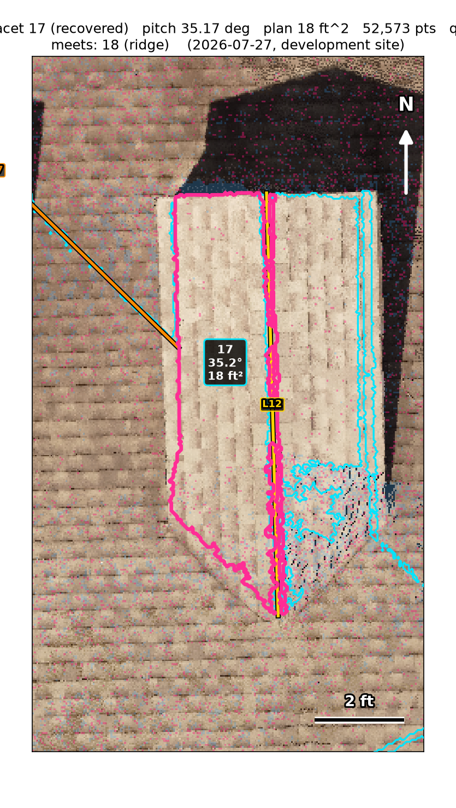
NEW facet 17recovered | pitch 35.18° | 53,355 pts | q 0.7413
cropped ×2.6 — the render drew into 38.4% of its frame. Click for the untouched original.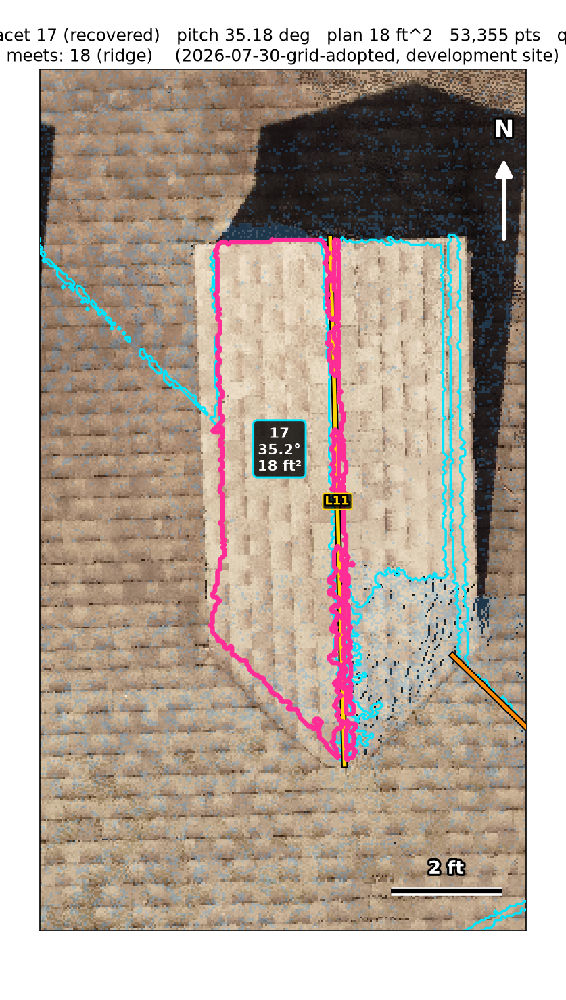
Physical description only. No threshold, no parameter, no fix.
1-TO-1 old [18] → new [18]
18→18 of old 0.95700029351335480 of new 0.97758788696499510 NOT 1.0
one old facet, one new facet
hash: DIFFERENT (d56e78990762 → 3cf3d63586b3) 356,771 of 3,217,500 pixels differ (11.09%), max channel delta 255, mean |delta| 3.75
| old | new | shared pts |
fraction of old | fraction of new |
|---|
| old 18 | new 18 | 39,126 | 0.9570 | 0.9776 |
OLD facet 18recovered | pitch 33.97° | 40,884 pts | q 0.6979
cropped ×2.7 — the render drew into 37.0% of its frame · only 695×1273 real pixels of panel were drawn, so it enlarges soft. Click for the untouched original.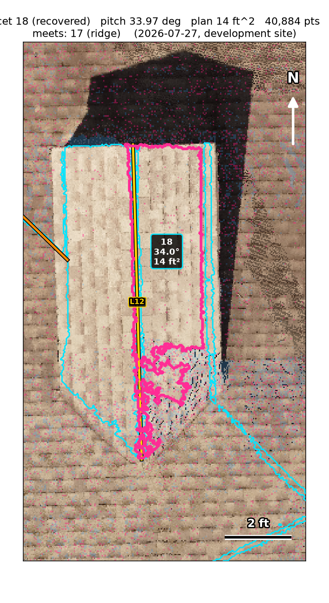
NEW facet 18recovered | pitch 33.98° | 40,023 pts | q 0.6947
cropped ×2.7 — the render drew into 37.1% of its frame · only 697×1273 real pixels of panel were drawn, so it enlarges soft. Click for the untouched original.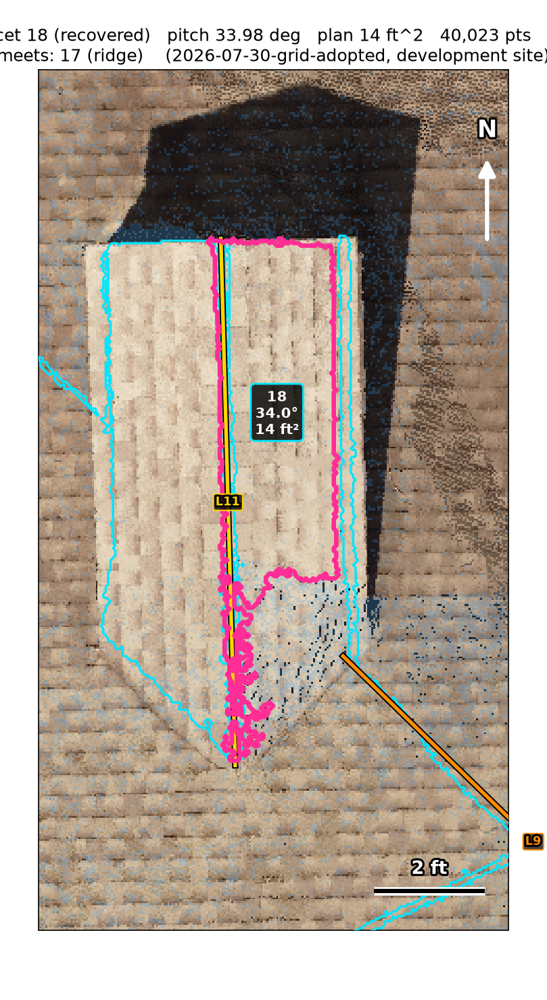
Physical description only. No threshold, no parameter, no fix.
1-TO-1 old [19] → new [19]
19→19 of old 0.98243639650941827 of new 0.97077697159733112 NOT 1.0
one old facet, one new facet
hash: DIFFERENT (3b09832afb4b → 21e4f6b3416a) 832,768 of 3,217,500 pixels differ (25.88%), max channel delta 255, mean |delta| 7.48
| old | new | shared pts |
fraction of old | fraction of new |
|---|
| old 19 | new 19 | 53,251 | 0.9824 | 0.9708 |
OLD facet 19recovered | pitch 34.50° | 54,203 pts | q 0.6553
cropped ×2.6 — the render drew into 38.7% of its frame. Click for the untouched original.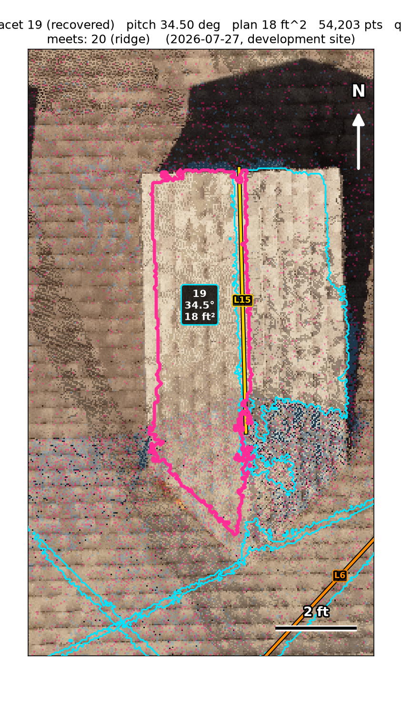
NEW facet 19recovered | pitch 34.52° | 54,854 pts | q 0.6687
cropped ×2.6 — the render drew into 38.5% of its frame. Click for the untouched original.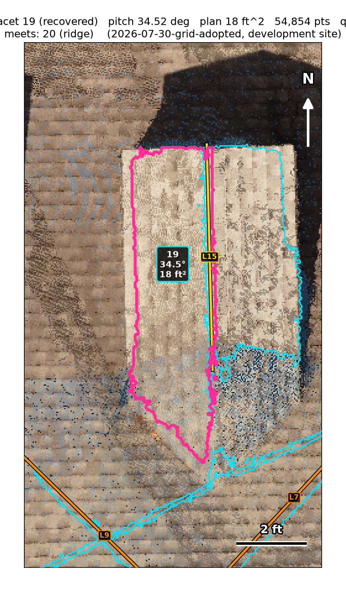
Physical description only. No threshold, no parameter, no fix.
1-TO-1 old [20] → new [20]
20→20 of old 0.95258309509370753 of new 0.96141179213663253 NOT 1.0
one old facet, one new facet
hash: DIFFERENT (b667d04dc224 → b0edc5b93606) 1,019,547 of 3,217,500 pixels differ (31.69%), max channel delta 255, mean |delta| 11.30
| old | new | shared pts |
fraction of old | fraction of new |
|---|
| old 20 | new 20 | 32,987 | 0.9526 | 0.9614 |
| old 20 | new 19 | 492 | 0.0142 | 0.0090 |
Rows below the line are overlaps with facets OUTSIDE this row. They are printed, never grouped; grouping is mutual best match and uses no cutoff.
OLD facet 20recovered | pitch 34.01° | 34,629 pts | q 0.6002
cropped ×2.4 — the render drew into 42.2% of its frame. Click for the untouched original.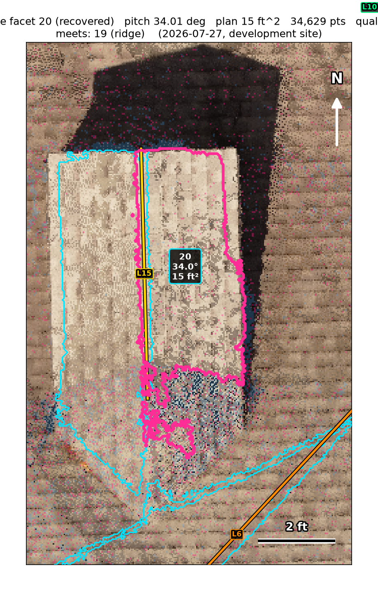
NEW facet 20recovered | pitch 34.01° | 34,311 pts | q 0.5993
cropped ×2.3 — the render drew into 42.9% of its frame. Click for the untouched original.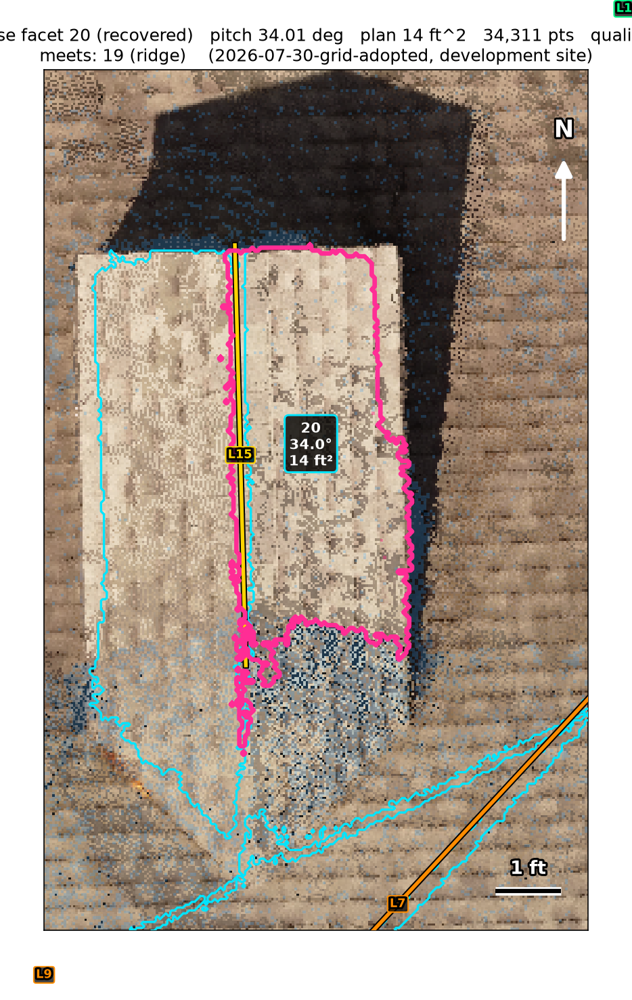
Physical description only. No threshold, no parameter, no fix.
1-TO-1 old [21] → new [21]
21→21 of old 0.96020637515324891 of new 0.94452540073363145 NOT 1.0
one old facet, one new facet
hash: DIFFERENT (c148f46d29ad → dac5d675bd58) 1,246,097 of 3,217,500 pixels differ (38.73%), max channel delta 255, mean |delta| 15.04
| old | new | shared pts |
fraction of old | fraction of new |
|---|
| old 21 | new 21 | 18,797 | 0.9602 | 0.9445 |
OLD facet 21recovered | pitch 33.35° | 19,576 pts | q 0.9465
cropped ×1.5 — the render drew into 65.6% of its frame. Click for the untouched original.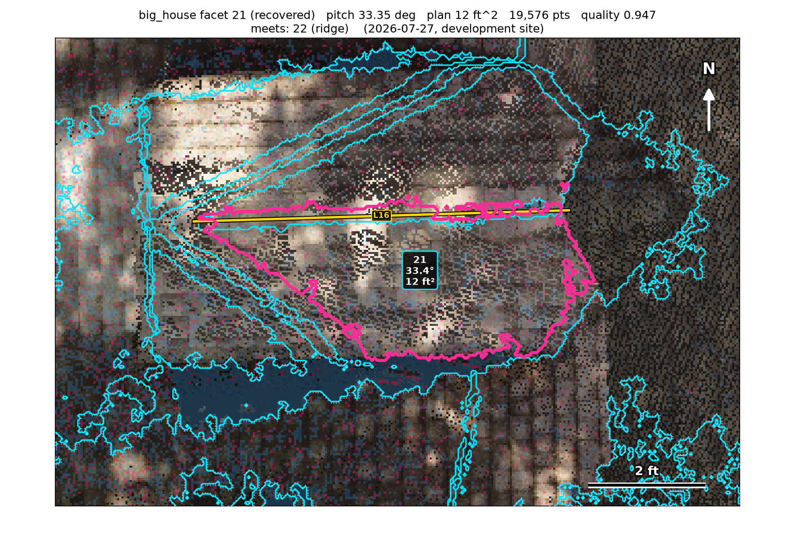
NEW facet 21recovered | pitch 33.35° | 19,901 pts | q 0.9556
cropped ×1.5 — the render drew into 66.2% of its frame. Click for the untouched original.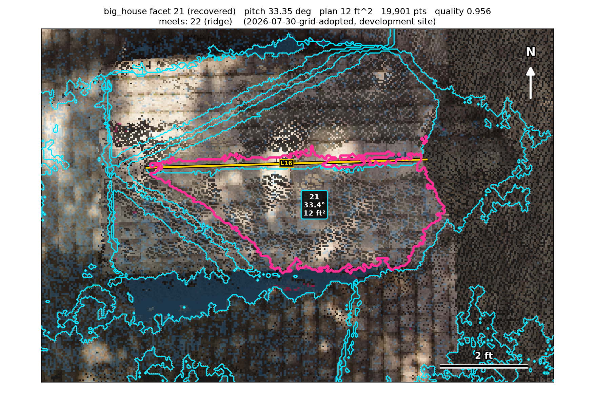
Physical description only. No threshold, no parameter, no fix.
1-TO-1 old [22] → new [22]
22→22 of old 0.96908029657674710 of new 0.96497015394282126 NOT 1.0
one old facet, one new facet
hash: DIFFERENT (fab5737d4e8f → 564947f40fd9) 1,452,993 of 3,217,500 pixels differ (45.16%), max channel delta 255, mean |delta| 16.13
| old | new | shared pts |
fraction of old | fraction of new |
|---|
| old 22 | new 22 | 18,429 | 0.9691 | 0.9650 |
| old 22 | new 21 | 221 | 0.0116 | 0.0111 |
Rows below the line are overlaps with facets OUTSIDE this row. They are printed, never grouped; grouping is mutual best match and uses no cutoff.
OLD facet 22recovered | pitch 32.75° | 19,017 pts | q 0.8168
cropped ×1.6 — the render drew into 64.0% of its frame. Click for the untouched original.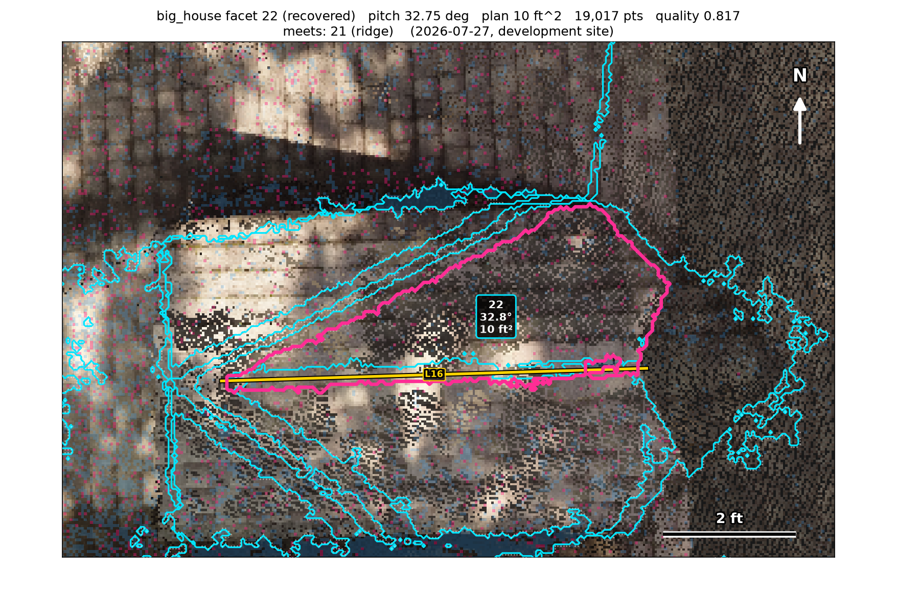
NEW facet 22recovered | pitch 32.74° | 19,098 pts | q 0.8251
cropped ×1.6 — the render drew into 64.4% of its frame. Click for the untouched original.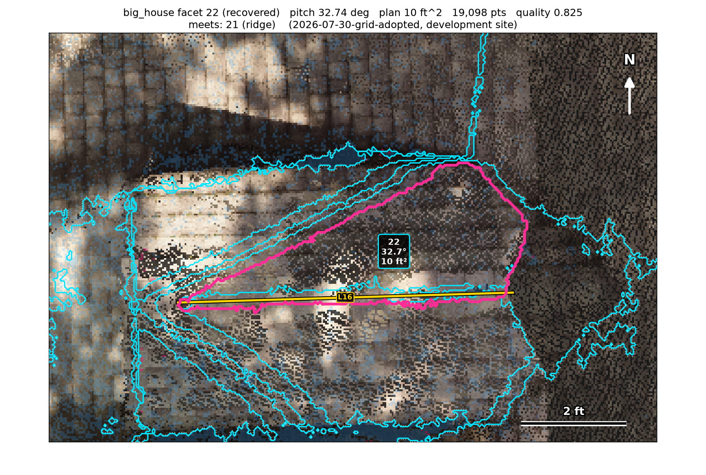
Physical description only. No threshold, no parameter, no fix.
1-TO-1 old [23] → new [23]
23→23 of old 0.98013188073394497 of new 0.96320401205871575 NOT 1.0
one old facet, one new facet
hash: DIFFERENT (980b0e151fae → 6196223f1694) 1,661,336 of 3,217,500 pixels differ (51.63%), max channel delta 255, mean |delta| 14.63
| old | new | shared pts |
fraction of old | fraction of new |
|---|
| old 23 | new 23 | 34,187 | 0.9801 | 0.9632 |
OLD facet 23recovered | pitch 8.49° | 34,880 pts | q 1.5816
cropped ×1.4 — the render drew into 72.5% of its frame. Click for the untouched original.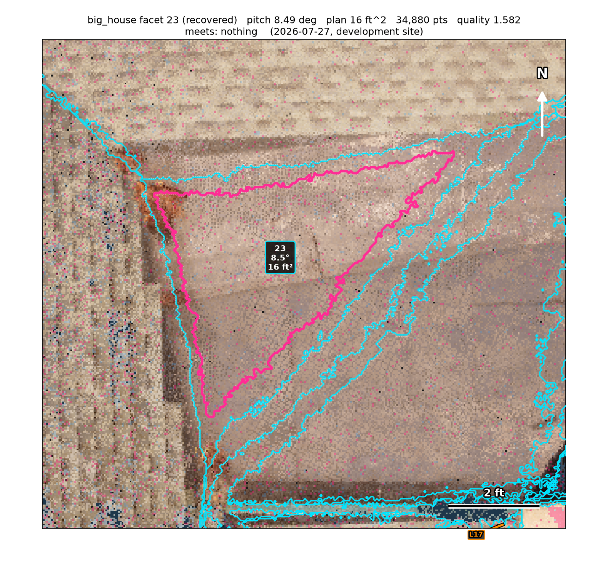
NEW facet 23recovered | pitch 8.49° | 35,493 pts | q 1.5843
cropped ×1.4 — the render drew into 71.9% of its frame. Click for the untouched original.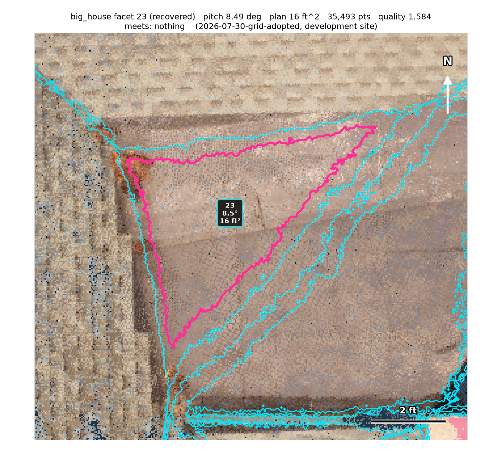
Physical description only. No threshold, no parameter, no fix.
1-TO-1 old [24] → new [24]
24→24 of old 0.94745884037222616 of new 0.89438475572673826 NOT 1.0
one old facet, one new facet
hash: DIFFERENT (93b6f84c8bc6 → d5974d3ec0c0) 1,032,418 of 3,217,500 pixels differ (32.09%), max channel delta 255, mean |delta| 12.92
| old | new | shared pts |
fraction of old | fraction of new |
|---|
| old 24 | new 24 | 13,236 | 0.9475 | 0.8944 |
OLD facet 24recovered | pitch 21.57° | 13,970 pts | q 2.0455
cropped ×2.4 — the render drew into 41.2% of its frame. Click for the untouched original.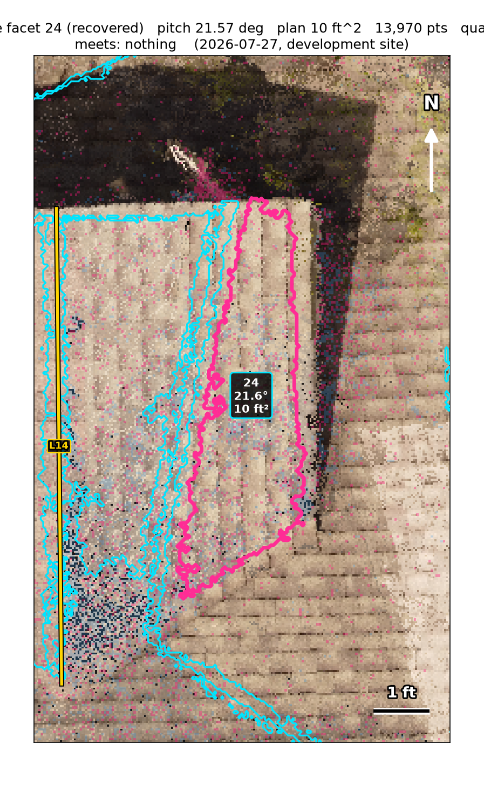
NEW facet 24recovered | pitch 21.60° | 14,799 pts | q 2.0425
cropped ×2.3 — the render drew into 43.2% of its frame. Click for the untouched original.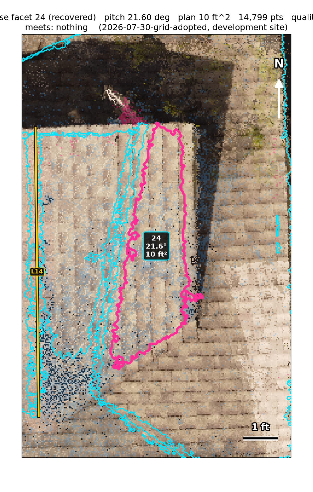
Physical description only. No threshold, no parameter, no fix.
1-TO-1 old [25] → new [25]
25→25 of old 0.84683402784835859 of new 0.84709231394875961 NOT 1.0
one old facet, one new facet
hash: DIFFERENT (3da85f773296 → d299a417c3ab) 1,662,029 of 3,217,500 pixels differ (51.66%), max channel delta 255, mean |delta| 23.85
| old | new | shared pts |
fraction of old | fraction of new |
|---|
| old 25 | new 25 | 8,332 | 0.8468 | 0.8471 |
OLD facet 25recovered | pitch 32.79° | 9,839 pts | q 1.7211
cropped ×1.5 — the render drew into 68.1% of its frame. Click for the untouched original.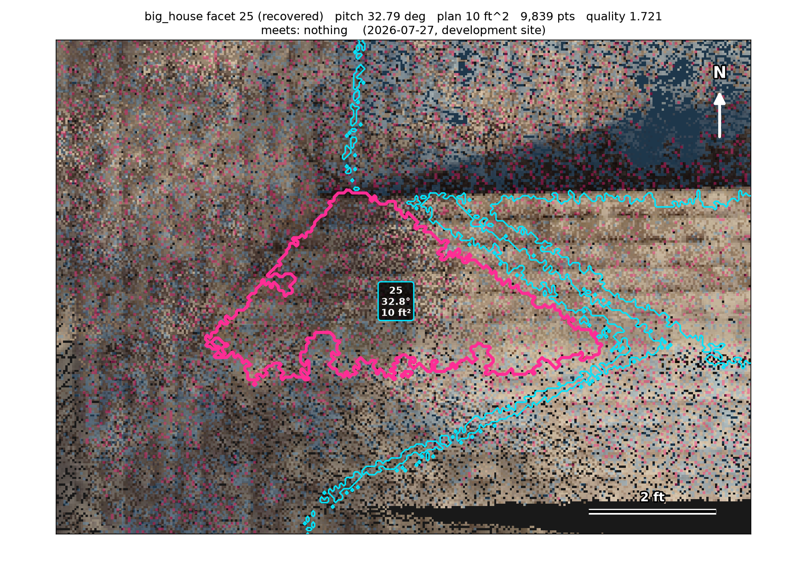
NEW facet 25recovered | pitch 32.79° | 9,836 pts | q 1.7271
cropped ×1.4 — the render drew into 70.1% of its frame. Click for the untouched original.
Physical description only. No threshold, no parameter, no fix.
1-TO-1 old [26] → new [26]
26→26 of old 0.92932489451476796 of new 0.88148971650917174 NOT 1.0
one old facet, one new facet
hash: DIFFERENT (dba904df50a0 → 6f1d41182476) 1,581,375 of 3,217,500 pixels differ (49.15%), max channel delta 255, mean |delta| 19.62
| old | new | shared pts |
fraction of old | fraction of new |
|---|
| old 26 | new 26 | 7,929 | 0.9293 | 0.8815 |
OLD facet 26recovered | pitch 33.04° | 8,532 pts | q 1.5408
cropped ×1.3 — the render drew into 76.7% of its frame. Click for the untouched original.NEW facet 26recovered | pitch 33.01° | 8,995 pts | q 1.5007
cropped ×1.3 — the render drew into 76.6% of its frame. Click for the untouched original.
Physical description only. No threshold, no parameter, no fix.
1-TO-1 old [27] → new [27]
27→27 of old 0.96665055582406956 of new 0.94957743804007222 NOT 1.0
one old facet, one new facet
hash: DIFFERENT (dcbcb05f5dc2 → c34809d079b6) 1,584,402 of 3,217,500 pixels differ (49.24%), max channel delta 255, mean |delta| 19.58
| old | new | shared pts |
fraction of old | fraction of new |
|---|
| old 27 | new 27 | 10,000 | 0.9667 | 0.9496 |
OLD facet 27recovered | pitch 33.26° | 10,345 pts | q 0.8299
cropped ×1.5 — the render drew into 67.3% of its frame. Click for the untouched original.NEW facet 27recovered | pitch 33.24° | 10,531 pts | q 0.8452
cropped ×1.5 — the render drew into 66.1% of its frame. Click for the untouched original.
Physical description only. No threshold, no parameter, no fix.
1-TO-1 old [28] → new [28]
28→28 of old 0.92695214105793455 of new 0.93211752786220869 NOT 1.0
one old facet, one new facet
hash: DIFFERENT (23fa2589045b → 6c03c11594cf) 1,666,162 of 3,217,500 pixels differ (51.78%), max channel delta 255, mean |delta| 19.90
| old | new | shared pts |
fraction of old | fraction of new |
|---|
| old 28 | new 28 | 3,680 | 0.9270 | 0.9321 |
OLD facet 28recovered | pitch 33.23° | 3,970 pts | q 1.1040
cropped ×1.3 — the render drew into 75.0% of its frame. Click for the untouched original.NEW facet 28recovered | pitch 33.12° | 3,948 pts | q 1.1677
cropped ×1.3 — the render drew into 75.3% of its frame. Click for the untouched original.
Physical description only. No threshold, no parameter, no fix.
OVERVIEW the whole roof, old against new
Reference for the 18 line rows below. A crease is a
property of the whole roof, so read the layout here first, then grade each line in its
own row. This panel is not graded and is not counted toward completeness.
hash: DIFFERENT (18febdb05287 → b97e3f4cd0da) 1,343,010 of 7,425,000 pixels differ (18.09%), max channel delta 255, mean |delta| 9.29
OLD facet overview
cropped ×2.1 — the render drew into 46.8% of its frame. Click for the untouched original.NEW facet overview
cropped ×2.1 — the render drew into 46.6% of its frame. Click for the untouched original.LINE 1-TO-1
ridge between [1, 3]
Lines are paired through the computed facet correspondence,
not by line id. Grade the crease against the facet renders above.
OLD line 0
ridge between facets [1, 3]
length 53.4 ft
NEW line 0
ridge between facets [1, 3]
length 53.4 ft
Physical description only. No threshold, no parameter, no fix.
LINE 1-TO-1
valley between [0, 7]
Lines are paired through the computed facet correspondence,
not by line id. Grade the crease against the facet renders above.
OLD line 1
valley between facets [0, 7]
length 32.9 ft
NEW line 1
valley between facets [0, 7]
length 32.9 ft
Physical description only. No threshold, no parameter, no fix.
LINE 1-TO-1
ridge between [6, 7]
Lines are paired through the computed facet correspondence,
not by line id. Grade the crease against the facet renders above.
OLD line 2
ridge between facets [6, 7]
length 20.5 ft
NEW line 2
ridge between facets [6, 7]
length 20.5 ft
Physical description only. No threshold, no parameter, no fix.
LINE 1-TO-1
hip between [0, 4]
Lines are paired through the computed facet correspondence,
not by line id. Grade the crease against the facet renders above.
OLD line 3
hip between facets [0, 4]
length 19.0 ft
NEW line 3
hip between facets [0, 4]
length 19.0 ft
Physical description only. No threshold, no parameter, no fix.
LINE 1-TO-1
ridge between [0, 2]
Lines are paired through the computed facet correspondence,
not by line id. Grade the crease against the facet renders above.
OLD line 4
ridge between facets [0, 2]
length 18.8 ft
NEW line 4
ridge between facets [0, 2]
length 18.8 ft
Physical description only. No threshold, no parameter, no fix.
LINE 1-TO-1
hip between [2, 4]
Lines are paired through the computed facet correspondence,
not by line id. Grade the crease against the facet renders above.
OLD line 5
hip between facets [2, 4]
length 18.6 ft
NEW line 5
hip between facets [2, 4]
length 18.6 ft
Physical description only. No threshold, no parameter, no fix.
LINE 1-TO-1
ridge between [4, 5]
Lines are paired through the computed facet correspondence,
not by line id. Grade the crease against the facet renders above.
OLD line 9
ridge between facets [4, 5]
length 10.8 ft
NEW line 6
ridge between facets [4, 5]
length 17.4 ft
Physical description only. No threshold, no parameter, no fix.
LINE 1-TO-1
hip between [1, 7]
Lines are paired through the computed facet correspondence,
not by line id. Grade the crease against the facet renders above.
OLD line 6
hip between facets [1, 7]
length 13.4 ft
NEW line 7
hip between facets [1, 7]
length 13.3 ft
Physical description only. No threshold, no parameter, no fix.
LINE 1-TO-1
ridge between [2, 6]
Lines are paired through the computed facet correspondence,
not by line id. Grade the crease against the facet renders above.
OLD line 8
ridge between facets [2, 6]
length 10.9 ft
NEW line 8
ridge between facets [2, 6]
length 10.9 ft
Physical description only. No threshold, no parameter, no fix.
LINE 1-TO-1
hip between [1, 6]
Lines are paired through the computed facet correspondence,
not by line id. Grade the crease against the facet renders above.
OLD line 7
hip between facets [1, 6]
length 12.5 ft
NEW line 9
hip between facets [1, 6]
length 10.5 ft
Physical description only. No threshold, no parameter, no fix.
LINE 1-TO-1
valley between [0, 1]
Lines are paired through the computed facet correspondence,
not by line id. Grade the crease against the facet renders above.
OLD line 10
valley between facets [0, 1]
length 10.4 ft
NEW line 10
valley between facets [0, 1]
length 10.4 ft
Physical description only. No threshold, no parameter, no fix.
LINE 1-TO-1
ridge between [17, 18]
Lines are paired through the computed facet correspondence,
not by line id. Grade the crease against the facet renders above.
OLD line 12
ridge between facets [17, 18]
length 9.4 ft
NEW line 11
ridge between facets [17, 18]
length 9.5 ft
Physical description only. No threshold, no parameter, no fix.
LINE 1-TO-1
ridge between [13, 14]
Lines are paired through the computed facet correspondence,
not by line id. Grade the crease against the facet renders above.
OLD line 11
ridge between facets [13, 14]
length 9.4 ft
NEW line 13
ridge between facets [13, 14]
length 9.4 ft
Physical description only. No threshold, no parameter, no fix.
LINE 1-TO-1
ridge between [15, 16]
Lines are paired through the computed facet correspondence,
not by line id. Grade the crease against the facet renders above.
OLD line 13
ridge between facets [15, 16]
length 9.4 ft
NEW line 12
ridge between facets [15, 16]
length 9.4 ft
Physical description only. No threshold, no parameter, no fix.
LINE 1-TO-1
ridge between [11, 12]
Lines are paired through the computed facet correspondence,
not by line id. Grade the crease against the facet renders above.
OLD line 14
ridge between facets [11, 12]
length 8.5 ft
NEW line 14
ridge between facets [11, 12]
length 8.4 ft
Physical description only. No threshold, no parameter, no fix.
LINE 1-TO-1
ridge between [19, 20]
Lines are paired through the computed facet correspondence,
not by line id. Grade the crease against the facet renders above.
OLD line 15
ridge between facets [19, 20]
length 6.5 ft
NEW line 15
ridge between facets [19, 20]
length 6.4 ft
Physical description only. No threshold, no parameter, no fix.
LINE 1-TO-1
ridge between [21, 22]
Lines are paired through the computed facet correspondence,
not by line id. Grade the crease against the facet renders above.
OLD line 16
ridge between facets [21, 22]
length 6.4 ft
NEW line 16
ridge between facets [21, 22]
length 6.3 ft
Physical description only. No threshold, no parameter, no fix.
LINE 1-TO-1
hip between [9, 10]
Lines are paired through the computed facet correspondence,
not by line id. Grade the crease against the facet renders above.
OLD line 17
hip between facets [9, 10]
length 1.3 ft
NEW line 17
hip between facets [9, 10]
length 1.2 ft
Physical description only. No threshold, no parameter, no fix.